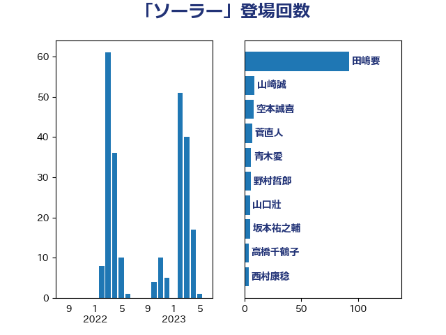

単語「ソーラー」

| 田嶋要 | 立憲民主党 | 32 回 |
| 須藤元気 | 無所属 | 23 回 |
| 小泉進次郎 | 自由民主党 | 20 回 |
| 徳永エリ | 立憲民主党 | 15 回 |
| 山崎誠 | 立憲民主党 | 12 回 |
| 菅直人 | 立憲民主党 | 9 回 |
| 勝俣孝明 | 自由民主党 | 6 回 |
| 青木愛 | 立憲民主党 | 6 回 |
| 山口壯 | 自由民主党 | 5 回 |
| 岩渕友 | 日本共産党 | 5 回 |
| 斎藤アレックス | 国民民主党 | 4 回 |
| 萩生田光一 | 自由民主党 | 4 回 |
| 高橋千鶴子 | 日本共産党 | 4 回 |
| 土屋品子 | 自由民主党 | 3 回 |
| 大岡敏孝 | 自由民主党 | 3 回 |
| 浅野哲 | 国民民主党 | 3 回 |
| 田名部匡代 | 立憲民主党 | 3 回 |
| 仁木博文 | 無所属 | 2 回 |
| 大塚耕平 | 国民民主党 | 2 回 |
| 梶山弘志 | 自由民主党 | 2 回 |
| 熊谷裕人 | 立憲民主党 | 2 回 |
| 玉木雄一郎 | 国民民主党 | 2 回 |
| 落合貴之 | 立憲民主党 | 2 回 |
| ながえ孝子 | 無所属 | 1 回 |
| 宗清皇一 | 自由民主党 | 1 回 |
| 山谷えり子 | 自由民主党 | 1 回 |
| 斉藤鉄夫 | 公明党 | 1 回 |
| 梅村みずほ | 日本維新の会 | 1 回 |
| 泉健太 | 立憲民主党 | 1 回 |
| 片山さつき | 自由民主党 | 1 回 |
| 秋本真利 | 自由民主党 | 1 回 |
| 笹川博義 | 自由民主党 | 1 回 |
| 鬼木誠 | 立憲民主党 | 1 回 |
| 麻生太郎 | 自由民主党 | 1 回 |